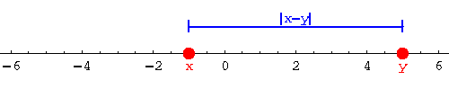
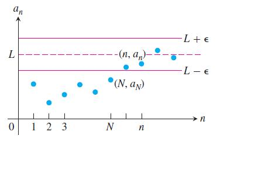
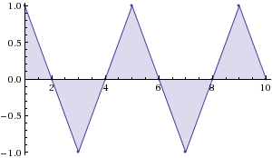
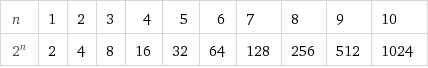
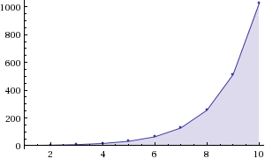
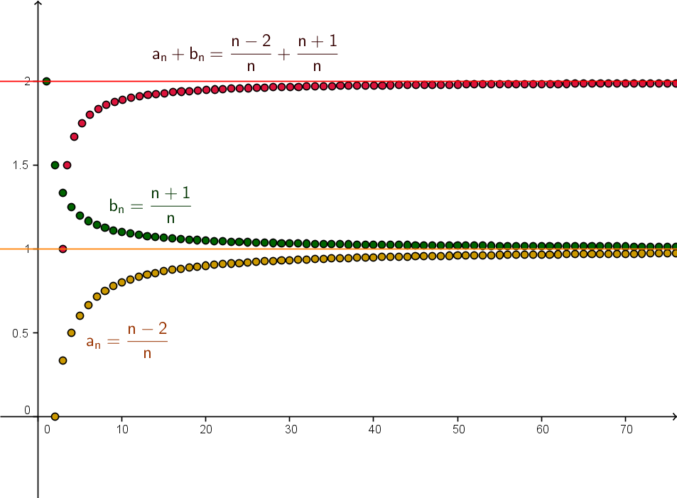

Introduzione
La radice quadrata di $2$ è un numero irrazionale, questo significa che non può essere scritto come rapporto di interi: nessuna frazione elevata al quadrato può dare come risultato $2$ (per una dimostrazione si può vedere qui o qui). Ai fini pratici può essere conveniente avere dei numeri razionali che approssimano $\sqrt{2}$ con un errore opportunamente piccolo rispetto ai calcoli che ci interessa svolgere. Un modo per ottenere questi numeri razionali che sono vicini a $\sqrt{2}$ consiste nel cercare di approssimare un quadrato di area $2$ con rettangoli i cui lati razionali hanno lunghezze sempre più vicine tra loro (e quindi sono rettangoli sempre più simili ad un quadrato). Si può partire con il rettangolo di lati $2$ e $1$ che in effetti ha area $2$ ma è molto lontano dall'approssimare un quadrato. L'approssimazione la possiamo migliorare così: prendiamo un nuovo rettangolo che ha come primo lato la media dei precedenti lati: $\frac{2+1}{2}=\frac 3 2$, e per il secondo lato scegliamo la lunghezza che serve per ottenere ancora area $2$, cioè $\frac 4 3$. Si può ancora migliorare l'approssimazione riutilizzando lo stesso procedimento su questo secondo rettangolo: costruiamo un nuovo rettangolo prendendo ancora come primo lato la media dei lati precedenti e l'altro lato in modo che l'area sia sempre $2$. Si ottengono come lati per il terzo rettangolo $\frac {17}{12}=1.41666...$ e $\frac {24}{17}=1.4117...$. Il procedimento si può reiterare generando rettangoli sempre più simili a quadrati, tutti di area $2$. Di seguito elenchiamo i lati che si ottengono iterando questo procedimento per 5 volte:
. | Passo | Lato 1 | Lato 2 | Area | Differenza |
. | 1 | 2.0000000000 | 1.0000000000 | 2 | 1 |
. | 2 | 1.5000000000 | 1.3333333333 | 2 | 0.166666666666667 |
. | 3 | 1.4166666667 | 1.4117647059 | 2 | 0.004901960784313 |
. | 4 | 1.4142156863 | 1.4142114385 | 2 | 0.00000424779964 |
. | 5 | 1.4142135624 | 1.4142135624 | 2 | 0.00000000000319 |
Notiamo che tutte le cifre decimali che abbiamo scritto per i lati ottenuti al quinto passo coincidono, tuttavia possiamo essere certi che questi lati non saranno effettivamente uguali al quinto passo e non potranno mai essere uguali dopo nessuno degli evenuali passi successivi. Infatti tutti i lati che stiamo ottenendo con questa costruzione sono numeri razionali (perché?) e se (per assurdo) avessimo due lati uguali avremmo ottenuto un quadrato di area $2$ con un lato razionale, che vorrebbe dire che $\sqrt{2}$ è un numero razionale, cosa che sappiamo essere falsa.
D'altra parte vediamo che andando avanti con i passi i due lati del rettangolo diventano progressivamente più vicini tra loro e hanno un numero sempre maggiore di cifre decimali in comune. Entrambi i lati si stanno avvicinando sempre di più al numero $\sqrt{2}$ senza mai effettivamente raggiungerlo in nessuno dei passi. Idealmente questo valore "limite" viene raggiunto "all'infinito".
Che cosa significa "all'infinito"? Possiamo dare un senso matematico preciso a questo concetto? Possiamo fidarci dell'idea intuitiva che ne abbiamo ed utilizzarla nei ragionamenti e nei calcoli matematici? Molti dei più influenti filosofi e matematici che si sono trovati a che fare con questo tipo di problema hanno ritenuto che la risposta fosse negativa. Sono stati anche formulati diversi paradossi che mostravano dei limiti delle nostre capacità di intuizione e ragionamento intorno all'infinito matematico. Per citare i più famosi ricordiamo:
Fu solo nel XIX secolo che i matematici trovarono un modo rigoroso e logicamente solido di padroneggiare il concetto di "limite" che abbiamo qui illustrato in modo intuitivo. Vediamo come.
Verso il concetto di "limite"
Facciamo sempre riferimeno alla tabella delle approssimazioni di $\sqrt{2}$. In base a quanto abbiamo visto possiamo affermare quanto segue:
Con i valori nella tabella è possibile ottenere approssimazioni buone quanto vogliamo del numero $\sqrt{2}$. Per avere il livello di precisione desiderato ci basta prendere un valore di "Lato 1" o "Lato 2" corrispondente ad un numero abbastanza grande di passi.
Facciamo un esempio per chiarire cosa stiamo dicendo: se voglio avere un'approssimazione di $\sqrt{2}$ con un errore minore di $0.01$ posso ottenerla considerando il "Lato1" per le righe della tabella successive alla seconda $2$ (quindi righe numero $2$, $3$, $4$,...). Se invece voglio un errore minore di $0.0000001$ devo considerare le righe dalla quinta in poi.
Proviamo ad esprimere il concetto in modo più preciso. Procederemo per passi successivi. Chiamiamo $a_n$ il numero che compare nella riga $n$-esima della colonna "Lato 1" (quindi $a_1$=2, $a_2=1.5$,....). Un primo tentativo di riformulazione può essere questo:
$a_n$ è vicino quanto vogliamo a $\sqrt{2}$ man mano che si procede nella tabella verso valori più grandi di $n$.
Notiamo subito che per esprimere questa affermazione in termini matematici ci serve innanzitutto una definizione di "distanza" tra due numeri. Un modo di definirla può essere il seguente: chiamiamo "distanza trai numeri $x$ e $y$" il numero $$ \text{dist}(x,y)=|x-y| $$ ovvero il modulo della loro differenza.

Dunque la distanza tra $a_n$ e $\sqrt{2}$ è $|a_n-\sqrt{2}|$. Grazie a questa definizione di "distanza" possiamo migliorare così la nostra formulazione iniziale:
il valore della distanza $|a_n-\sqrt{2}|$ è piccolo quanto vogliamo man mano che si procede nella tabella verso valori più grandi di $n$.
Ora preoccupiamoci di tradurre in termini matematici l'espressione' "$x$ è piccolo quanto vogliamo man mano che...". Quello che vorremmo dire è che possiamo avere $|a_n-\sqrt{2}|$ più piccolo di una quantità desiderata a patto di andare abbastanza avanti tra gli elementi della tabella. In altri termini: se noi fissiamo un qualsiasi livello di precisione desiderato (una distanza da $\sqrt{2}$) come ad esempio $\frac 1 {1000}$ possiamo ottenere $|a_n-\sqrt{2}|$ minore di $\frac 1 {1000}$ a patto di prendere $n$ abbastanza grande (nel caso di $\frac 1 {1000}$ occorre che sia $n\geq4$). Dunque possiamo ancora riformulare:
Comunque scegliamo una distanza $\varepsilon>0$ abbiamo $|a_n-\sqrt{2}|<\varepsilon$ a patto di prendere valori di $n$ sufficientemente grandi.
Rimane da chiarire che cosa intendiamo per "a patto di prendere valori di $n$ sufficientemente grandi". Notiamo che questi valori di $n$ sufficientemente grandi variano in base alla scelta di $\varepsilon$. Ad esempio se ci accontentiamo di avere $|a_n-\sqrt{2}|<1$ (cioè $\varepsilon=1$) allora vanno bene tutti i valori di $n$ (da $n=1$ in poi). Se invece pretendiamo di avere $|a_n-\sqrt{2}|<\frac{1}{100}$ allora dobbiamo prendere $n\geq 3$ (come si può facilmente controllare dai valori sulla tabella).
Quello che stiamo dicendo dunque è che data una distanza desiderata $\varepsilon$ esiste un valore "soglia" $N_\varepsilon$ (dipendente da $\varepsilon$) tale che $|a_n-\sqrt{2}|<\varepsilon$ per tutti i valori di $n$ maggiori o uguali a quel valore "soglia" $N_\varepsilon$.
A questo punto siamo in grado di riformulare l'affermazione da cui siamo partiti in modo matematicamente rigoroso:
Comunque scegliamo una distanza $\varepsilon>0$ esiste un valore "soglia" $N_\epsilon$ tale che per tutti i valori $n\geq N_\varepsilon$ risulta $|a_n-\sqrt{2}|<\varepsilon$
in simboli matematici:
$\forall \varepsilon>0 \, \exists N_\varepsilon|\forall n(n\geq N_\varepsilon \Longrightarrow |a_n-\sqrt{2}|<\varepsilon)$
Definizione di limite di una successione
La successione delle approssimazioni di $\sqrt{2}$ è un esempio di una sequenza di numeri che raggiungono "al limite" un numero prefissato. Altri esempi sono:
- la successione $1$, $\frac 1 2$, $\frac 1 3$, $\frac 1 4$, $\frac 1 5$, ... che tende "al limite" a $0$
- la successione $2$, $\frac 3 2$, $\frac 4 3$, $\frac 5 4$, ... che tende "al limite" $1$


In entrambi i casi possiamo rappresentare termine numero $n$ della successione con una formula: $a_n=\frac 1 n$ per la prima e $a_n=\frac{n+1}{n}$ per la seconda.
Quando affermiamo che $a_n$ al limite tende al valore $L$ intendiamo dire esattamente la stessa cosa discussa nel paragrafo precedente a proposito delle approssimazioni di $\sqrt{2}$. Cioè stiamo dicendo che:
$a_n$ è vicino quanto vogliamo al valore limite $L$ man mano che si procede nella successione verso valori più grandi di $n$.Che in termini matematici, come abbiamo visto, diventa:
Comunque scegliamo una distanza $\varepsilon>0$ esiste un valore "soglia" $N_\epsilon$ tale che per tutti i valori $n\geq N_\varepsilon$ risulta $|a_n-L|<\varepsilon$.
In notazione simbolica possiamo riscrivere la definizione così:
$\forall \varepsilon>0 \, \exists N_\varepsilon|\forall n(n\geq N_\varepsilon \Longrightarrow |a_n-L|<\varepsilon)$
La definizione può essere illustrata così:

dove $N$ corrisponde al valore soglia $N_\varepsilon$ e le linee orizzontali $L-\varepsilon$ e $L+\varepsilon$ delimitano la regione in cui abbiamo $|a_n-L|<\varepsilon$.
Vediamo nei nostri esempi precedenti se la definizione che abbiamo dato risulta verificata per i valori limite che abbiamo indicato. Prendiamo $a_n=\frac {n+1} n$. In questo caso $l$ dovrebbe essere $1$. Scegliamo una distanza $\varepsilon=\frac 1 {10000}$. Chiediamoci: per quali $n$ è verificato $|a_n-l|<\varepsilon$? Risulta $|a_n-l|=|\frac {n+1} n - 1|=\frac 1 n$ mentre $\varepsilon=\frac 1 {10000}$ (lo abbiamo scelto noi). Quindi dobbiamo avere $\frac 1 n<\frac 1 {10000}$, risolviamo la disequazione rispetto a $n$ e otteniamo $n>10000$. Quindi dal termine $a_{10000}=\frac{10001}{10000}$ in poi tutti gli $a_n$ distano da $1$ meno di $\frac 1 {10000}$.
Abbiamo appena verificato che quello che si dice nella definizione è vero per $a_n=\frac {n+1}{n}$ quando si sceglie $\varepsilon=\frac{1}{10000}$. Ma come facciamo a verificare se è vero per ogni possibile scelta di $\varepsilon$? Le scelte possibili sono infinite. Quello che possiamo fare è indicare un modo (una formula) per associare a tutti i possibili valori di $\varepsilon$ un corrispondente valore "soglia" $N_\varepsilon$ oltre il quale la distanza di $a_n$ dal limite è minore di $\varepsilon$. Vediamo come, sempre con riferimento allo stesso esempio.
Ci chiediamo: per quali valori di $n$ risulta $|\frac {n+1} n - 1|<\varepsilon$? Di fatto si tratta di risolvere una disequazione nell' incognita $n$ dove $\varepsilon$ è un parametro positivo. Svolgendo i calcoli e togliendo il modulo la disuguaglianza diventa $\frac 1 n<\varepsilon$, e risolvendo in $n$ abbiamo $n>\frac 1 \varepsilon$. Quindi il valore "soglia" $N_\varepsilon$ associato a $\varepsilon$ di cui parla la definizione sarà proprio $N_\varepsilon=\frac 1 \varepsilon$. Poichè abbiamo individuato una formula generale valida per qualsiasi valore di $\varepsilon>0$ la definizione risulta verificata per tutti gli $\varepsilon>0$.
Successioni che non hanno limite
Non necessariamente una sequenza di numeri deve tendere ad un valore limite. Prendiamo ad esempio la successione $$ a_n=\sin\left(\frac \pi 2 n\right) $$ che rappresentiamo con una tabella:

e con un grafico:

E' facile convincersi che i valori di questa successione si ripetono periodicamente riproponendo la stessa sequenza $1$, $0$, $-1$, $0$ infinite volte. Nessuno di questi valori può essere il limite della successione. Prendiamo ad esempio $1$: non è il limite infatti se prendiamo $\varepsilon=\frac 1 2$ non riusciremo mai a trovare un $N_\varepsilon$ tale che da quel momento in poi tutti i termini della successione distano da $1$ meno di $\frac 1 2$, compariranno sempre degli $0$ (che ha distanza $1$ da $1$) e compariranno dei $-1$ (che ha distanza da $1$ pari a $2$).
Successioni divergenti
Abbiamo visto che una successione può convergere verso un valore limite o oscillare entro un insieme di valori senza convergere a nessuno in particolare. Vediamo un altro comportamento possibile. Consideriamo le successioni $a_n=n$, $a_n=n^2$, $a_n=2^n$. La successione $2^n$ è rappresentata di seguito:


Dovrebbe essere evidente che nessuna di queste successioni tende ad un valore limite. Tutte e tre assumono valori $a_n$ arbitrariamente grandi (e positivi) a patto di andare sufficientemente avanti con $n$. In altri termini qualunque "traguardo" $M>0$ consideriamo, per quanto grande esso sia, questo viene prima o poi superato dalla successione $a_n$. Diremo in tal caso che le successioni "divergono" o che hanno come limite $+\infty$.
Traduciamo quanto detto in un linguaggio rigoroso: diremo che $a_n$ tende a $+\infty$ se è verificata la seguente condizione:
Comunque scegliamo $M>0$ esiste un valore "soglia" $N_M$ tale che per tutti i valori $n\geq N_M$ risulta $a_n>M$.
Funzioni di variabile reale
Una successione si definisce associando ad ogni numero naturale $n$ un numero reale $a_n$. Ad esempio la successione $1$, $\frac 1 2$, $\frac 1 3$, $\frac 1 4$ associa $1\mapsto 1$, $2\mapsto \frac 1 2$, $3 \mapsto \frac 1 3$, ..., $n \mapsto \frac 1 n$ come si vede dalla tabella:
Una "funzione di variabile reale" invece si definisce associando ad ogni numero reale $x \in I \subset \mathbb R$ un altro numero reale che indichiamo $f(x)$. L'insieme $I$ si chiama "dominio" della funzione, è l'insieme da cui prendiamo i valori in "input". Non essendo possibile indicare per ogni numero $x$ il corrispondente numero $f(x)$ (essendo tipicamente il dominio $I$ infinito) la definizione viene fatta di solito con una formula, come per le successioni (ad esempio scriviamo $f(x)=2x$ per associare ad ogni numero il suo doppio).
Per tutte le funzioni che possono essere definite con una formula 1 esiste un metodo visivo per rappresentarne il comportamento: si disegna su un piano cartesiano l'insieme dei punti di coordinate $(x,f(x))$, tale insieme avrà (nei casi che studieremo) l'aspetto di una curva più o meno regolare.
Limite di una funzione all'infinito
Come una successione anche una funzione può avvicinarsi sempre di più ad un valore limite man mano che la sua variabile $x$ cresce. Prendiamo ad esempio la funzione $f(x)=\frac 1 x$ (l'iperbole) definita sul dominio $I=\mathbb R -\{0\}$: per valori di $x$ sempre più grandi la funzione assume valori sempre più vicini a $0$ (come accadeva alla successione $a_n=\frac 1 n$).
Possiamo definire rigorosamente questo concetto riadattando alle funzioni la definizione che abbiamo visto per le successioni. Diremo che $f(x)$ tende al valore $l$ per $x$ che tende a $+\infty$ (in simboli $x\to +\infty$) se vale la seguente condizione:
Comunque scegliamo una distanza $\varepsilon>0$ esiste un valore "soglia" $k_\varepsilon$ tale che per tutti i valori $x> k_\varepsilon$ del dominio $I$ risulta $|f(x)-l|<\varepsilon$
Il concetto è illustrato nel seguente grafico dove l'area arancione indica i punti che verificano $|f(x)-l|<\varepsilon$ mentre la zona verde indica i punti che verificano $x>k_\varepsilon$:
Per dire che $f(x)$ tende a $l$ per $x\to +\infty$ si usa la notazione compatta $$ \lim_{x\to +\infty} f(x)=l. $$
Nel caso di una funzione bisogna tenere presente che quando diciamo "per ogni $x$" i valori possibili non sono più solo interi ma variano su tutto il dominio $I$ della funzione.Anche una funzione, come le successioni, può non avere limite per $x\to+\infty$, ad esempio la sinusoide $f(x)=\sin x $ con dominio $I=\mathbb R$ oscilla continuamente tra $-1$ e $1$ quindi non converge verso nessun numero in particolare.
Può anche succedere che una funzione abbia limite infinito per $x\to +\infty$. In analogia con la definizione che abbiamo dato per le successioni diremo che $$ \lim_{x\to +\infty} f(x)=+\infty. $$ se vale la seguente condizione:
Comunque scegliamo $M>0$ esiste un valore "soglia" $k_M$ tale che per tutti i valori $x> k_M$ risulta $f(x)>M$.
La variabile $x$ di una funzione assume valori sulla retta reale, dunque oltre considerare valori positivi e sempre più grandi (tendenti a $+\infty$) possiamo muoverci in direzione opposta e considerare per $x$ valori di segno negativo e sempre piùgrandi in modulo, e chiederci che cosa fa $f(x)$ "al limite". Diremo in tal caso che stiamo considerando $x$ tendente a $-\infty$.
La definizione rigorosa di limite per $x\to -\infty$ è analoga a quella per $x\to+\infty$: diremo che $$ \lim_{x\to -\infty} f(x)=l. $$ se vale la seguente condizione:
Comunque scegliamo una distanza $\varepsilon>0$ esiste un valore "soglia" $k_\varepsilon$ tale che per tutti i valori $x< k_\varepsilon$ del dominio $I$ risulta $|f(x)-l|<\varepsilon$
In modo analogo si definisce $\displaystyle \lim_{x\to -\infty} f(x)=+\infty$:
Comunque scegliamo $M>0$ esiste un valore "soglia" $k_M$ tale che per tutti i valori $x< k_M$ risulta $f(x)>M$.
Limite di una funzione in un punto
Fin qui ci siamo posti il problema di definire il comportamento di una successione $a_n$ o di una funzione $f(x)$ quando la loro variabile ($n$ o $x$) tendeva all'infinito. Nel caso delle fuinzioni abbiamo visto che $x$ poteva anche tendere a $-\infty$ ma c'è una ulteriore possibilità: la variabile $x$ di una funzione può avvicinarsi quanto vogliamo ad un qualsiasi numero reale $x_0$ appartenente al dominio $I$ della funzione, senza raggiungerlo. Ha senso quindi considerare il comportamento di una funzione $f(x)$ quando la variabile $x$ "tende" ad un qualche valore $x_0 \in I$.
Diremo che $f(x)$ tende al limite $L$ quando $x\to x_0$ se succede questo: $f(x)$ è vicino quanto vogliamo a $L$ a patto di considerare $x$ abbastanza vicino ad $x_0$. Richiediamo inoltre che $x$ debba essere comunque diverso da $x_0$ perchè vogliamo che $x$ "tenda" a $x_0$ senza effettivamente raggiungerlo.
Traduciamo il concetto in termini rigorosi: diremo che $$ \lim_{x\to x_0} f(x)=L. $$ se
Comunque scegliamo una distanza $\varepsilon>0$ esiste una distanza "soglia" $\delta_\varepsilon$ tale che risulta $|f(x)-L|<\varepsilon$ per tutti i punti $x\neq x_0$ che hanno $\text{dist}(x,x_0)<\delta_\varepsilon$
Il concetto è illustrato nel seguente grafico:
La funzione nel disegno tende a $L=3$ per $x\to x_0=3$, la fascia arancione indica i punti dove la distanza di $f(x)$ dal limite $L$ è minore di $\varepsilon$, la fascia verde indica i punti in cui la distanza tra $x$ e $x_0$ è minore di $\delta_\epsilon$. Nota come i punti della funzione che sono dentro la fascia verde sono automaticamente anche dentro la fascia arancione, come richiede la definizione di limite.
Limite da destra e da sinistra
Può succedere che una funzione abbia comportamenti differenti a destra e a sinistra di un punto $x_0$, un esempio lo si vede nel seguente grafico:
In questo caso quando $x$ si avvicina a $x_0$ (che nel grafico è $0$) da destra vediamo che $f(x)$ diventa sempre più vicino a $2$ mentre se $x$ si avvicina a $x_0$ da sinistra il valore di $f(x)$ cresce sempre di più e va verso $+\infty$. In questo caso la definizione di limite che abbiamo dato poco fa non si applica: la funzione non ha nessun limite. Tuttavia è possibile definire un concetto di limite "da destra/sinistra" che dia conto del fatto che la funzione tende in effetti a un limite se ci limitiamo soltando quello che succede a destra (o a sinistra) del punto $x_0$.
Diremo che il limite di $f(x)$ è $L$ per $x$ che tende a $x_0$ "da destra" se
Comunque scegliamo una distanza $\varepsilon>0$ esiste una distanza "soglia" $\delta_\varepsilon$ tale che risulta $|f(x)-L|<\varepsilon$ per tutti i punti $x> x_0$ che hanno $\text{dist}(x,x_0)<\delta_\varepsilon$.
Nota che è identica alla definizione di limite in un punto tranne per il fatto che si richiede $x> x_0$ anzichè $x \neq x_0$. La definizione è illustrata nell'immagine che abbiamo visto sopra.
Per dire che $f(x)$ tende a $L$ per $x$ che tende a $x_0$ "da destra" scriveremo: $$ \lim_{x\to x_0^+}f(x)=L. $$
Analogamente diremo che il limite di $f(x)$ è $L$ per $x$ che tende a $x_0$ "da sinistra" se
Comunque scegliamo una distanza $\varepsilon>0$ esiste una distanza "soglia" $\delta_\varepsilon$ tale che risulta $|f(x)-L|<\varepsilon$ per tutti i punti $x< x_0$ che hanno $\text{dist}(x,x_0)<\delta_\varepsilon$.
In questo caso la notazione che si usa è $$ \lim_{x\to x_0^-}f(x)=L. $$
Asintoti verticali
Nel grafico precedente abbiamo visto come avvicinandoci ad $x_0=0$ da sinistra la funzione $f(x)$ assumesse valori sempre più grandi. Un comportamento analogo si riscontra nell'iperbole $f(x)=\frac 1 x$ (che pure abbiamo già incontrato precedentemente) sempre vicino a $x_0=0$ come mostra il seguente grafico:
Vediamo che per $x$ che tende a $0$ da destra $f(x)$ va verso $+\infty$ mentre per $x$ che tende a $0$ da sinistra $f(x)$ va verso $-\infty$. E' possibile dare una definizione rigorosa per questo tipo di comportamento, sempre in analogia con le definizioni date fino ad ora.
Diremo che $f(x)$ tende a $+\infty$ per $x$ che tende a $x_0$ da destra se:
Comunque scegliamo un numero $M>0$ esiste una distanza "soglia" $\delta_M$ tale che risulta $f(x)>M$ per tutti i punti $x>x_0$ che hanno $\text{dist}(x,x_0)<\delta_M$.
Anche questa definizione è illustrata nel grafico precedente.
L'espreessione "$f(x)$ tende a $+\infty$ per $x$ che tende a $x_0$ da destra" si rappresenta in modo compatto con la notazione $$ \lim_{x\to x_0^+}f(x)=+\infty. $$
Analogamente diremo che $f(x)$ tende a $-\infty$ per $x$ che tende a $x_0$ da destra se:Comunque scegliamo un numero $M < 0$ esiste una distanza "soglia" $\delta_M$ tale che risulta $f(x) < M$ per tutti i punti $x > x_0$ che hanno $\text{dist}(x,x_0) < \delta_M$.
Esercizio: formula le analoghe definizioni per i limiti "da sinistra".
Se $f(x)$ ha limite infinito (positivo o negativo) da destra e/o da sinistra per $x_0$ diremo che $f(x)$ ha un "asintoto verticale" in $x=x_0$.
Operazioni aritmetiche con i limiti
Consideriamo due successioni $a_n=\frac {n -2} {n}$ e $b_n=\frac {n+1}{n}$ (quest'ultima già incontrata qui), entrambe tendono a $1$. Chiediamoci: che cosa succede se costruisco una nuova successione combinando queste due successioni con delle operazioni aritmetiche? La nuova successione avrà ancora un limite? Se sì questo sarà in qualche modo collegato ai limiti delle successioni di partenza? Visto che $a_n$ è sempre più vicino a $1$ e $b_n$ è sempre più vicino a $1$ ci aspettiamo che la loro somma $a_n+b_n$ sarà sempre più vicina a $1+1=2$ (infatti se per $n$ grandi $a_n$ dista - mettiamo - $\frac 1 {1000}$ da $1$ e $b_n$ dista $\frac 1 {1000}$ da $1$ la loro somma disterà meno di $\frac 2 {1000}$ da $1+1=2$, sempre per $n$ grandi, quindi sarà vicina a $2$.). Se facciamo i calcoli sui primi termini delle successioni in questione otteniamo il seguente grafico:

Quello che vediamo ci conferma che in effetti il limite della somma $a_n+b_n$ sembra essere proprio $2$ cioè la somma dei limiti delle successioni che abbiamo sommato. D'altra parte usando l'algebra vediamo che $\frac {n -2} {n}+\frac {n+1}{n}=\frac {2n-1}{n}=2-\frac 1 n$ dunque la sua distanza da $2$ è $\frac 1 n$ che tende a $0$, ciò significa che $2$ è effettivamente il limite di questa somma.
Quanto detto è valido in generale. Si può dimostrare (ma qui non lo faremo) il seguente teorema:
Se abbiamo $$ \lim_{n\to \infty} a_n = L_1, \qquad \lim_{n\to \infty} b_n = L_2 $$ allora risulta $$ \lim_{n\to \infty} (a_n+b_n) = L_1+L_2 $$ e questo vale anche nel caso in cui qualcuno dei limiti è infinito con le convenzioni $$ \pm \infty + L=\pm \infty, $$ $$ +\infty + \infty=+ \infty $$ $$ -\infty - \infty=- \infty. $$ dove $L$ è un qualsiasi numero reale.
Rimane scoperto dal teorema il caso in cui sommando i limiti si abbia $$ +\infty+(-\infty) $$ in questo caso infatti il risultato del limite non è deducibile soltanto conoscendo i limiti delle due successione. Per tale motivo $+\infty+(-\infty)$ è chiamata forma indeterminata. Quando i limiti di $a_n$ e $b_n$ danno luogo ad una forma indeterminata il teorema non aiuta a determinare il limite della somma, per farlo occorre trovare altre maniere. Vediamo degli esempi:
- Se $a_n=2n$ e $b_n=-n$ la somma $a_n+b_n$ si può scrivere $2n-n$. Se proviamo ad applicare il teorema abbiamo per il limite $+\infty-\infty$, cioè la "forma indeterminata" che abbiamo appena visto. Tuttavia possiamo ricavare il limite di $a_n+b_n$ senza bisogno del teorema: semplicemente osserviamo che $2n-n=n$ che sappiamo tendere a $+\infty$.
- Se $a_n=n$ e $b_n=-n$ la somma $a_n+b_n$ si può scrivere $n-n$. Se proviamo ad applicare il teorema abbiamo per il limite $+\infty-\infty$, cioè la forma indeterminata. Se invece osserviamo che $a_n+b_n=n-n=0$ (per ogni valore di $n$) risulta evidente che il limite è $0$.
- Se $a_n=n$ e $b_n=-2n$ la somma $a_n+b_n$ si può scrivere $n-2n$. Se proviamo ad applicare il teorema abbiamo per il limite $+\infty-\infty$(la forma indeterminata). Se invece osserviamo che $a_n+b_n=n-2n=-n$ (per ogni valore di $n$) risulta evidente che il limite è $-\infty$.
E' importante sottolineare che l'espressione "forma indeterminata" non indica una proprietà della successione $a_n+b_n$ (la quale può benissimo avere un limite), indica solo la scrittura $+\infty + (-\infty)$.
Si può dimostrare un teorema analogo al precedente anche per il prodotto di due successioni:
Se abbiamo $$ \lim_{n\to \infty} a_n = L_1, \qquad \lim_{n\to \infty} b_n = L_2 $$ allora risulta $$ \lim_{n\to \infty} (a_n \cdot b_n) = L_1 \cdot L_2 $$ e questo vale anche nel caso in cui qualcuno dei limiti è infinito seguendo le seguenti regole: $$ \pm \infty \cdot L=\pm \infty $$ dove $L\neq 0$ e il segno è dato dalla regola dei segni della moltiplicazione, $$ \pm \infty \cdot (\pm \infty)=\pm \infty $$
Resta escluso dal teorema il caso $0 \cdot (\pm \infty)$, ovvero il caso in cui una delle due successioni tenda a $0$ e l'altra abbia un limite infinito. Anche questa è una "forma indeterminata": non è possibile stabilire quale sarà il limite a partire dai limiti di $a_n$ e $b_n$. Vediamo degli esempi:
- Se $a_n=\frac 1 n$ e $b_n=n$ il prodotto $a_n \cdot b_n$ si può scrivere $\frac 1 n \cdot n$. Se proviamo ad applicare il teorema abbiamo per il limite del prodotto $0 \cdot \infty$, cioè la forma indeterminata. Tuttavia $\frac 1 n \cdot n = 1$ per tutti gli $n$ quindi questo prodotto tende a $1$
- Se $a_n=\frac 1 n$ e $b_n=n^2$ il prodotto $a_n \cdot b_n$ si può scrivere $\frac 1 n \cdot n^2$. Se proviamo ad applicare il teorema abbiamo per il limite del prodotto $0 \cdot \infty$, cioè la forma indeterminata. Tuttavia $\frac 1 n \cdot n^2 = n$ per tutti gli $n$ quindi questo prodotto tende a $+\infty$
- Se $a_n=\frac 1 {n^2}$ e $b_n=n$ il prodotto $a_n \cdot b_n$ si può scrivere $\frac 1 {n^2}\cdot n$. Se proviamo ad applicare il teorema abbiamo per il limite del prodotto $0 \cdot \infty$, cioè la forma indeterminata. Tuttavia $\frac 1 {n^2}\cdot n = \frac 1 n$ per tutti gli $n$ quindi questo prodotto tende a $0$
Infine abbiamo un teorema analogo per il rapporto tra due successioni:
Se $$ \lim_{n\to \infty} a_n = L_1, \qquad \lim_{n\to \infty} b_n = L_2 $$ allora risulta $$ \lim_{n\to \infty} \frac{a_n}{b_n} = \frac{L_1}{L_2} $$ e questo vale anche nel caso in cui qualcuno dei limiti è infinito o $0$ con le regole $$ \frac {\pm \infty}{L}=\pm \infty, $$ $$ \frac {L}{\pm \infty}=0, $$ $$ \frac {0}{L}=0, $$ $$ \frac {L}{0}=\pm \infty, $$ dove $L\neq0$ e i segni seguono la normale regola dei segni per le divisioni.
In questo caso le forme indeterminate che rimangono escluse dal teorema sono due: $$ \frac 0 0, \qquad \frac {\pm \infty}{\pm \infty}. $$ Esempi della forma indeterminata $\frac{+\infty}{+\infty}$ che hanno limiti diversi sono $\frac n n$, $\frac {n^2}{n}$, $\frac {n}{n^2}$.
Esercizio: trova esempi della forma indeterminata $\frac 0 0$ che abbiamo limiti diversi.
Dall'ultimo teorema si può dedurre questa conseguenza:
Se $$ \lim_{n\to \infty} a_n = L\neq 0 $$ allora risulta $$ \lim_{n\to \infty} \frac{1}{a_n} = \frac{1}{L}, $$ se $$ \lim_{n\to \infty} a_n = \pm \infty $$ allora $$ \lim_{n\to \infty} \frac{1}{a_n} = 0, $$ se $$ \lim_{n\to \infty} a_n = 0 $$ allora $$ \lim_{n\to \infty} \frac{1}{a_n} = \pm \infty, $$ con il segno $+$ se $a_n\to 0^+$ e il segno $-$ se $a_n\to 0^-$.